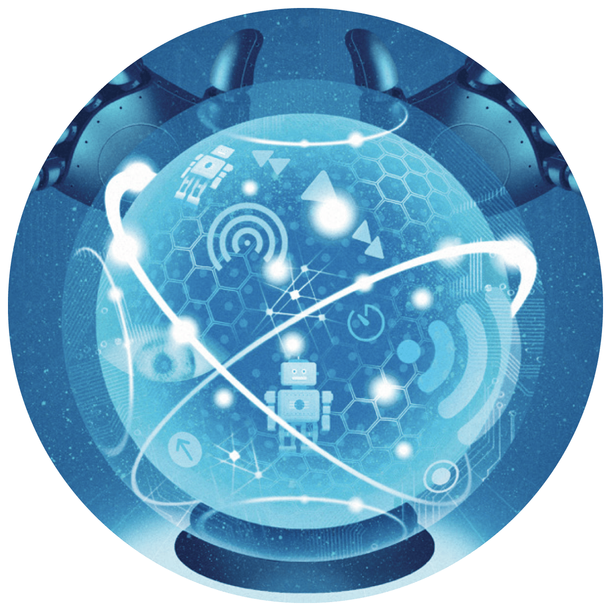

In this monthly post, I highlight some of the best thought-leadership articles and reports that cross my desk. I note why they rise to the top
of the pile and are worth reading (or skimming), even if they focus on functions or industries outside your areas of interest. Among the criteria I use to make the selections are freshness and provocativeness of insights and timeliness, analytical rigor, depth of prescriptions, and overall readability.
In this edition, l focus on some of the strongest pieces that have been published since
August 2019 on a hot topic in business and society—artificial intelligence (AI). Professional services firms are pouring resources into developing their intellectual property on this subject, one that is clearly of great interest to their clients. As you’ll see below, firms have moved beyond general discussions of AI to specific applications by sector and function.

Innovation for
sustainability:
Solving the plastics and
packaging challenge
PA Consulting
Tracking the trends 2019:
The top 10 issues
transforming the future
of mining
Deloitte
“
Insurtechs on the rise”
Bain
Securing software as a
service”
McKinsey
“
Paying for value in
health care
BCG
Featured articles
“
“
It may be just a function of the time period I chose to focus on, but Deloitte produced the most impressive stream of work on AI of the monitored firms.
This piece is a comprehensive report on how biopharma can take advantage of AI, including seven case studies looking at the progress some companies have made.
This one, developed in cooperation with the World Economic Forum, is an exhaustive review of the risks of AI in financial services and proposes strategies to address them. The format is more like an extended infographic than a traditional vertical report, helping readers make their way through the dense subject matter.
This report offers a detailed examination of the market for edge AI chips. So, it’s more of a hardware story—a theme I haven’t seen other consultancies address. It’s also the first paper in a bigger package of articles on predictions for 2020 in the TMT sectors, if you’re interested in reading more.
Read the report
Intelligent drug discovery: Powered by AI
Deloitte

We saw a lot of smart writing on the risks associated with AI this year. This piece
from McKinsey is one of the most sophisticated that I read.
Professional services firms are also starting to get into the specific uses of AI. That’s what authors from Capgemini do in
a report on AI and cybersecurity, another one of the most critical topics in business and society. The authors set aside the hype and examine how AI can best be employed in cybersecurity. In a similar vein, authors from PwC look at the ways AI could change how CFOs do their jobs.
Read the report
Artificial intelligence
Winners: McKinsey, Capgemini, PwC
This author team from Deloitte takes an unusually detailed look at the digital shortcomings of the workforce and what companies can do to help their workers thrive in a digital world.
The emergence of business ecosystems was well chronicled this year. What most pieces failed to do was clearly define what an ecosystem is and detail its pros and cons. BCG’s Henderson Institute does such a good job explaining the ecosystem model in this piece that you don’t have to bother reading anything else on the subject to understand what’s going on.
Nearly every article about digital transformation bemoans the scarcity of talent in the data and analytics field. These
authors from the executive search firm
Spencer Stuart discuss how to identify and hire these increasingly important employees.
Read the article
Data and analytics and digital or organizational transformation
Winners: Deloitte, BCG Henderson Institute,
Spencer Stuart
“
All professional services firms weighed in on some aspect of diversity and inclusion this year. Authors at the executive search firm Heidrick & Struggles distinguished themselves by addressing the topic from the point of view of Asia–Pacific companies.
Read the article
Diversity and inclusion
Winner: Heidrick & Struggles
“

The virtue of this piece is the close look at how AI could benefit a company’s information technology operations (AIOps, as it is known). The article notes, “. . . like the cobbler who resoles everyone else’s shoes before fixing his own, IT organizations have been slower to employ machine learning (ML) technologies within their own functions.” The piece discusses the challenges IT operations face and how AI might help overcome them.
Read the report
Ready or not, AI is coming to IT operations”
BCG
Back to top


Deloitte
Intelligent drug discovery: Powered by AI
Navigating uncharted waters: A roadmap to responsible innovation with AI in financial services
Technology, media, and
telecommunications
predictions 2020
BCG
Ready or not, AI Is coming to IT operations”
Capgemini
Scaling AI in manufacturing operations: A practitioners’ perspective
Towards ethical AI
PwC
How AI will transform the CFO’s role
This report is filled with examples of how big companies are applying AI in manufacturing, including an appendix of the most implemented use cases by sector. The report outlines actions that manufacturers can take to scale AI.
Perhaps the biggest challenge with AI is employing it ethically. This report, a collection of nine Q&As with executives and academics, addresses the topic from various angles. The authors synthesize the views of the experts, add their own perspective, and report the findings of a survey of executives and consumers on ethical questions in AI.
Scaling AI in manufacturing operations: A practitioners’ perspective
Capgemini
This piece warrants mention because it moves the conversation about how to
use AI to a specific executive—the chief financial officer—and the finance function. It makes the case that no business function or C-suite role offers more opportunity to apply AI than finance.
How AI will transform the CFO's role
PwC
Towards ethical AI
Capgemini
Navigating uncharted waters: A roadmap to responsible innovation with AI in financial services
Deloitte
Technology, media, and telecommunications predictions 2020
Deloitte

Deloitte
Intelligent drug discovery: Powered by AI
Navigating uncharted waters: A roadmap to responsible innovation with AI in financial services
Technology, media, and
telecommunications
predictions 2020
BCG
Ready or not, AI Is coming to IT operations”
Capgemini
Scaling AI in manufacturing operations: A practitioners’ perspective
Towards ethical AI
PwC
How AI will transform the CFO’s role
BCG
Ready or not, AI is coming to IT operations”
Ready or not, AI Is coming to IT operations”
BCG
“
“
“